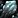

This MoP Classic Inscription leveling guide will show you the quickest and most efficient way to level your Inscription skill up from 1 to 600 in Mists of Pandaria Classic.
This MoP Classic Inscription leveling guide will show you the quickest and most efficient way to level your Inscription skill up from 1 to 600 in Mists of Pandaria Classic.
Shopping List
The shopping list for Inscription works a bit differently than for other professions because of Ink Traders. You can buy all low-level inks from them in exchange for  Ink of Dreams. This is the MoP ink, made by milling Pandaria herbs, or you can just buy it directly from the Auction House.
Ink of Dreams. This is the MoP ink, made by milling Pandaria herbs, or you can just buy it directly from the Auction House.
Ink Traders
You can trade  Ink of Dreams at
Ink of Dreams at  Moraka in Orgrimmar or
Moraka in Orgrimmar or  Sarana Damir in Stormwind to get older inks used for leveling.
Sarana Damir in Stormwind to get older inks used for leveling.
Because of this system, there are a few different ways to level up Inscription, depending on what's cheaper or more convenient on your server.
Two Ways to Level
There are two main ways to get materials for leveling Inscription:
- Buy inks from Ink Traders: The fastest method. It can be expensive, but sometimes it's cheaper than buying herbs and milling them, depending on your server's economy.
- Buy herbs and mill them into inks: Slower, but often cheaper if low-level herbs are affordable.
There’s also a third option: milling Pandaria herbs. This requires Inscription 500, so it only works if you already have a high-level Scribe. It can be the cheapest method if older herbs are expensive, but it's more of a niche option for players leveling multiple characters.
Buying Herbs or Inks
Below is a breakdown of the approximate herbs or inks needed to reach 1-600:
- The first row in the table shows the total number of herbs needed. These don't have to be all from the same type.
- The second row lists the herb types you can use.
- The third row shows what pigments you'll get from those herbs.
- The fourth row shows how many
 Ink of Dreams you'll need to trade for the inks required.
Ink of Dreams you'll need to trade for the inks required.
Since prices vary by realm, there's no single best option. Go row by row, search for the herbs, and compare the cost of buying herbs versus just buying Ink of Dreams and trading it for what you need.
Total Ink of Dreams needed
If you have the gold and don’t want to bother with any of this, you’ll need:
- 34x
 Ivory Ink
Ivory Ink - 467x Ink of Dreams.
That will cover all the inks needed for 1-425.
| Quantity | Herbs you can Mill | Milling Results | Buying Inks |
|---|---|---|---|
| 120x | Earthroot, Peacebloom, Silverleaf | 34x |
|
| 110x | Briarthorn, Bruiseweed, Mageroyal, Stranglekelp, Swiftthistle |
|
27x Ink of Dreams |
| 170x | Grave Moss, Kingsblood, Liferoot, Wild Steelbloom |
|
60x Ink of Dreams |
| 180x | Fadeleaf, Goldthorn, Khadgar's Whisker, Dragon's Teeth |
|
60x Ink of Dreams |
| 240x | Arthas' Tears, Blindweed, Firebloom, Ghost Mushroom, Gromsblood, Purple Lotus, Sungrass |
|
60x Ink of Dreams |
| 120x | Dreamfoil, Golden Sansam, Icecap, Mountain Silversage, Sorrowmoss |
|
60x Ink of Dreams |
| 180x | Felweed, Ragveil, Terocone, Ancient Lichen, Nightmare Vine, Netherbloom, Mana Thistle, Dreaming Glory |
|
60x Ink of Dreams |
| 440x | Icethorn, Lichbloom, Fire Leaf, Fire Seed, Tiger Lily, Adder's Tongue, Deadnettle, Goldclover, Talandra's Rose |
|
100x Ink of Dreams |
| 140x | Cinderbloom, Stormvine | Ashen Pigment Burning Embers | - |
| 220x | Desecrated Herb, Green Tea Leaf, Fool's Cap, Rain Poppy, Silkweed, Snow Lily |
Shadow Pigment
 Misty Pigment |
- |
Milling
 Milling is an ability you get when you learn Inscription. Milling can be used to mill 5 herbs for 2 - 4 pigments, and then you use the pigments to turn into inks.
Milling is an ability you get when you learn Inscription. Milling can be used to mill 5 herbs for 2 - 4 pigments, and then you use the pigments to turn into inks.
Milling Macro
Use this macro to mill your herbs.
/cast Milling /use Peacebloom
Just replace the herb in the macro with the herbs you want to mill. You can also add more herbs to the macro if you want.
Inscription Trainers
Horde trainers:
 Jo'mah in Orgrimmar.
Jo'mah in Orgrimmar.- Margaux Parchley in Undercity.
- Poshken Hardbinder in Thunder Bluff.
- Zantasia in Silvermoon City.
Alliance trainers:
 Catarina Stanford in Stormwind City.
Catarina Stanford in Stormwind City.- Elise Brightletter in Ironforge.
- Feyden Darkin in Darnassus
- Thoth in The Exodar.
Leveling MoP Classic Inscription
1 - 75
 Virtuoso Inking Set and
Virtuoso Inking Set and  Light Parchment are usually sold by the Inscription supply vendor near your trainer.
Light Parchment are usually sold by the Inscription supply vendor near your trainer.
You can use SHIFT + LEFT MOUSE to buy more than one Parchment.  Light Parchment stacks up to 100, so start your typing with 1 and then hit two 0.
Light Parchment stacks up to 100, so start your typing with 1 and then hit two 0.
- 1 - 18
17xIvory Ink - 17 Alabaster Pigment
Start making
 Scroll of Stamina if you bought Ivory Ink and didn't mill herbs.
Scroll of Stamina if you bought Ivory Ink and didn't mill herbs.
- 18 - 35
17xScroll of Stamina - 17 Ivory Ink
- 35 - 53
22x Moonglow Ink - 44 Alabaster Pigment
Moonglow Ink - 44 Alabaster Pigment
Ink Traders: Buy 40x
Moonglow Ink make 40x  Enchanting Vellum until you reach 75.
Enchanting Vellum until you reach 75.
- 53 - 75
22xEnchanting Vellum - 22 Moonglow Ink
75 - 126
Learn Inscription Journeyman. (Requires level 10)
Multiple Glyphs and Scrolls at the same skill ranges
There are many Glyphs and Scrolls at different skill ranges with the same amount of materials needed, so when you see Glyph of ..., you can choose between more recipes that are orange to you and require the same amount of materials.
- 75 - 80
21x Midnight Ink - 42 Dusky Pigment
Midnight Ink - 42 Dusky Pigment
Ink Traders: Buy 27x
Midnight Ink and make 2x [Any orange Glyph]
- 80 - 101
7x Glyph of.... - 21 Midnight InkLearn new recipes if you haven't already, and make any Glyph that is orange to you. Glyphs turn yellow after 10 points at this stage, so don't queue up all 7 at once. Keep learning new recipes and switch to a different Glyph when needed.
- 101 - 105
39x Lion's Ink - 78 Golden Pigment
Lion's Ink - 78 Golden Pigment
Make any orange Glyph if you did not reach 105 by making these.
Ink Traders: Buy 60x
Lion's Ink and make Orange Glyphs until 147. Then you’ll have to make yellow Glyphs since there are no orange ones for those levels. Make around 3 to 6 yellow Glyphs to reach 150.
- 105 - 126
7x Glyph of ... - 21 Lion's InkMake any Glyph that is orange to you. Your aim should always be to make glyphs while they are orange. Glyphs turn yellow after 5 points, then learn new recipes and choose another Glyph.
126 - 200
Learn Inscription Expert. (Requires level 20)
- 126 - 129
It's important to stop making this recipe at 129! You won't have the benefits of multiple skill-ups if you pass 129!Turn your
 Burnt Pigment into
Burnt Pigment into  Dawnstar Ink. If you didn't mill your herbs and you don't have Burnt Pigment, you can make any Glyph that is orange to you.
Dawnstar Ink. If you didn't mill your herbs and you don't have Burnt Pigment, you can make any Glyph that is orange to you.
- 129 - 147
6x Glyph of ... - 18 Lion's InkMake any Glyph that is orange to you. Glyphs turn yellow after 5 and 10 points here, so you must keep learning new ones.
- 147 - 150
Make Strange Tarot until you reach 150. It depends on how many Dawnstar Ink you have.
Strange Tarot until you reach 150. It depends on how many Dawnstar Ink you have.
- 150 - 155
42x Jadefire Ink - 90 Emerald Pigment
Jadefire Ink - 90 Emerald Pigment
Ink Traders: Buy 60x
Jadefire Ink and make Orange Glyphs until you reach 195. When you reach 195, start making yellow Glyphs. Make 5-9 to reach 200.
- 155 - 197
14x Glyph of ... - 42 Jadefire InkMake orange Glyphs. You have to keep learning new ones every 5 points.
Turn all your
 Indigo Pigment into
Indigo Pigment into  Royal Ink at 175 if you have any.
Royal Ink at 175 if you have any.
- 197 - 200
Make
Arcane Tarot until you reach 200.Make any Glyph that is YELLOW to you if you don't have
Royal Ink. There won't be any orange Glyps for this part.
200 - 290
Learn Inscription Artisan. (Requires level 35)
- 200 - 205
42x Celestial Ink - 84 Violet Pigment
Celestial Ink - 84 Violet Pigment
Ink Traders: Buy 60x  Celestial Ink and make Orange Glyphs until you reach 245, then make 5-8 yellow Glyphs until you reach 250.
Celestial Ink and make Orange Glyphs until you reach 245, then make 5-8 yellow Glyphs until you reach 250.
- 205 - 247
14x Glyph of ... - 42 Celestial InkMake Glyphs until they turn yellow, then learn new ones.
Turn all your
 Ruby Pigment into
Ruby Pigment into  Fiery Ink at 225.
Fiery Ink at 225.
- 247- 250
Make one Book of Stars if you have enoughFiery Ink. Otherwise, make any Glyph that is yellow to you.
- 250-255
20-35x Shimmering Ink - 40-70 Silvery Pigment
Shimmering Ink - 40-70 Silvery Pigment
If you mill your herbs, you will probably need fewer Inks because you will make a few
 Ink of the Sky from your rare pigments between 275 - 295.
Ink of the Sky from your rare pigments between 275 - 295.Ink Traders: Buy 60x
Shimmering Ink and make Orange Glyphs until you reach 292, then make 3x Scroll of Stamina VI until you reach 295.
- 255 - 276
7x Glyph of ... - 21 Shimmering InkMake Glyphs until they turn yellow, then learn new ones.
- 276 - 290
14xInk of the Sky - 14 Sapphire Pigment
You have to make more orange Glyphs if you didn't mill your herbs or if you don't have 14 Sapphire Pigments.
Master Inscription
Visit your trainer and learn Master Inscription. (Requires level 50)
290 - 350
- 290 - 305
45x Ethereal Ink - 90 Nether Pigment
Ethereal Ink - 90 Nether Pigment
Ink Traders: Buy 60x
Ethereal Ink and make Orange Glyphs until you reach 355.
- 305 - 350
15x Glyph of ... - 45 Ethereal InkMake Glyphs until they turn yellow, then learn new ones.
Grand Master Inscription
Visit your trainer and learn Grand Master Inscription. (Requires level 65)
350 - 425
- 350 - 355
100x Ink of the Sea - 200 Azure Pigment
Ink of the Sea - 200 Azure Pigment
Ink Traders: Buy 30x
Ink of the Sea and make Orange Glyphs until you reach 385.
- 355 - 376
7x Glyph of ... - 21 Ink of the Sea
- 376 - 379
 Snowfall Ink - Icy Pigment
Snowfall Ink - Icy Pigment
Use all the rare pigments available. Keep the extra Snowfall Ink for Northrend Inscription Research. You will need to research to learn most "Northrend" glyphs.
- 379 - 385
2x Glyph of... - 6 Ink of the Sea
- 385 - 386
1x Northrend Inscription Research - 3 Ink of the Sea, Snowfall Ink
Northrend Inscription Research - 3 Ink of the Sea, Snowfall Ink
Buy 1x
Snowfall Ink from the Auction House or 2x  Icy Pigment and then make one Snowfall Ink if you haven't milled your herbs.
Icy Pigment and then make one Snowfall Ink if you haven't milled your herbs.
- 386 - 400
15x Any Discovered Major Glyph - 45 Ink of the SeaThis one will be green for the last few points, so you might have to make more.
It seems in MoP Classic you can now discover glyphs with Northrend Inscription Research that use different types of Ink. So if you get unlucky with RNG and discover a glyph that doesn't use Ink of the Sea, you’ll need to mill more herbs to reach 400. But those glyphs actually stay orange up to 400, so you’ll end up using fewer inks overall. (Still trying to figure out how this works)
- 400 - 405
5xScroll of Stamina VIII - 5 Ink of the Sea
- 405 - 410
5x Scroll of Spirit VIII - 5 Ink of the Sea
Scroll of Spirit VIII - 5 Ink of the Sea
- 410 - 415
5xScroll of Intellect VIII- 5 Ink of the Sea
- 415 - 420
5x Scroll of Strength VIII - 5 Ink of the Sea
Scroll of Strength VIII - 5 Ink of the Sea
- 420 - 425
5xScroll of Agility VIII - 5 Ink of the Sea
Cataclysm Inscription
Visit your trainer and learn Illustrious Grand Master Inscription. (Requires level 75)
425 - 480
- 425 - 445
30x Blackfallow Ink - 60 Ashen Pigment
- 445 - 450
5xScroll of Intellect IX - 5 Blackfallow Ink
- 450 - 460
10x Mysterious Fortune Card - 10 Blackfallow Ink
- 460 - 465
5xScroll of Stamina IX - 5 Blackfallow Ink
- 465 - 471
2x Glyph of Colossus Smash - 6 Blackfallow Ink
- 471 - 475
4xScroll of Agility IX - 4 Blackfallow Ink
- 475 - 480
Turn all your Burning Embers into Inferno Ink. If you don't have any Burning Ember, skip this part and start making the next recipe.
480 - 500
There are a couple of Origami recipe drops you can farm for this part that are very cheap to make, so you could save a few hundred gold by doing them. The recipes aren’t too hard to get, but you’ll need to farm some mobs in Vashj'ir and Deepholm. If you don’t want to bother with that, you can skip this part and just make the Glyphs and Scrolls listed below.
- 480 - 485
1x
 Lord Rottington's Pressed Wisp Book - 20 Volatile Life
Lord Rottington's Pressed Wisp Book - 20 Volatile Life
- 485 - 488
1x Glyph of Crackling Tiger Lightning - 3x Ink of the Sea
You can buy
Ink of the Sea with Ink of Dreams from the Ink Traders. Visit Moraka in Orgrimmar or Sarana Damir in Stormwind. Or just mill a a few WotLK herbs: Icethorn, Lichbloom, Fire Leaf, Fire Seed, Tiger Lily, Adder's Tongue, Deadnettle, Goldclover, Talandra's Rose
- 488 - 494
2x Glyph of Fighting Pose - 6x Ink of the Sea
- 494 - 500
2x Glyph of Flying Serpent Kick - 6x Ink of the Sea
Before you go farming, check if these recipes are already sitting in your bank or bags. You might have looted them earlier when your Inscription skill was too low to learn them and then forgot about it. They won’t drop again if you already have them in your inventory or bank.
First, go to Vashj'ir – Kelp'thar Forest and kill any mobs until you get  Technique: Origami Slime (zone drop). The drop rate is pretty high, so don’t get confused by Wowhead data.
Technique: Origami Slime (zone drop). The drop rate is pretty high, so don’t get confused by Wowhead data.
Craft Origami Slime until you reach 490.
Then go to Deepholm and kill Twilight Bloodsmith mobs until you get  Technique: Origami Rock. This is also a zone drop, so other mobs in Deepholm can drop it too. Learn the recipe and craft Origami Rock until you reach 500.
Technique: Origami Rock. This is also a zone drop, so other mobs in Deepholm can drop it too. Learn the recipe and craft Origami Rock until you reach 500.
MoP Classic Inscription
Visit your trainer and learn the new MoP Classic Inscription skill. You don't have to go to Pandaria to learn the new MoP Inscription skill and recipes. You can learn it from any of the trainers in the old capital cities.
Pandaria Inscription Trainers
If you're looking for the MoP trainers in Pandaria, you can learn it from Inkmaster Wei in The Jade Forest or Lorewalker Huynh (flying required) in Vale of Eternal Blossoms.
502 - 600
- 502 - 540
54xInk of Dreams - 108 Shadow Pigment
Turn all your Misty Pigment into
 Starlight Ink.
Starlight Ink.You will probably reach even 545 by making the Inks, then stop making them and only make more if you need them.
- 540 - 541
1x Scroll of Wisdom - 3 Ink of Dreams
Scroll of Wisdom - 3 Ink of Dreams
When you make a
Scroll of Wisdom, you will discover a new Glyph recipe.
- 541 - 595
18x [Any Orange Glyph] - 54 Ink of Dreams
If you have more than one recipe available, make different ones to make them easier to sell.
Out of the 36 Glyphs, a few require different types of ink. If you discover one of those but only have
Ink of Dreams, you can trade it for any other ink at Ink Traders!If your goal is to craft one of the epic Inscription items like the
 Inscribed Serpent Staff, it's better to stop making Glyphs at skill 560. You'll reach 600 just by crafting the materials needed for the epic items (like 20 Scroll of Wisdom). The staff itself also gives 30 skill points when you craft it.
Inscribed Serpent Staff, it's better to stop making Glyphs at skill 560. You'll reach 600 just by crafting the materials needed for the epic items (like 20 Scroll of Wisdom). The staff itself also gives 30 skill points when you craft it.
Darkmoon Faire Free +5 Profession Skill
Check your Calendar in-game to see if the Darkmoon Faire is open. The event is available every two weeks. It starts on Sunday and lasts for a week.
During the event, you can complete quests for each profession and gain +5 skill points for each. Click here to read more about the quests.
- 595 - 600
3x [Any "Greater" shoulder Enchant] - 9x Starlight Ink
If you were unlucky with milling results you might have to buy some Starlight Ink from the Auction House.
Congratulations on reaching 600! If you spot any typos, wrong material counts, or have suggestions to improve the guide, feel free to send feedback.
Now that you've maxed out Inscription, check out the full overview of MoP Classic Inscription. It includes profession perks, trainer recipes, Darkmoon Cards, and epic item crafts: